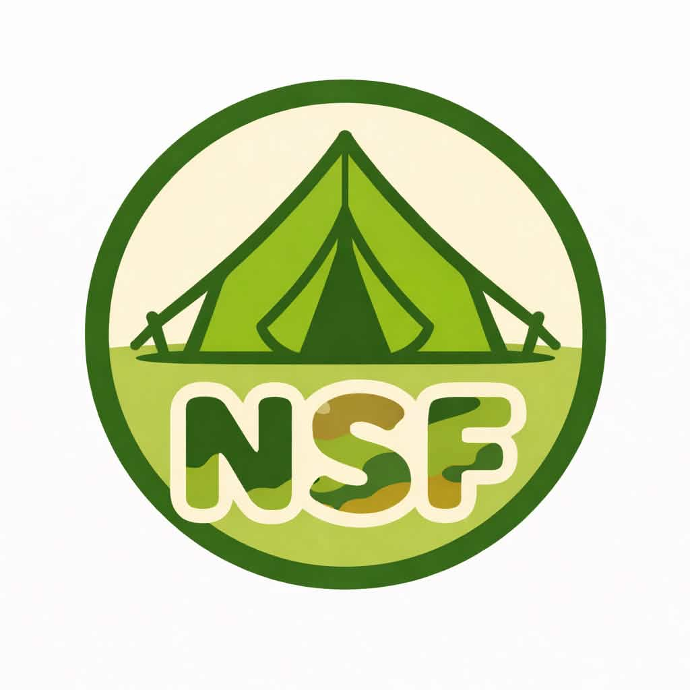

単なる防災講演や知識学習ではなく、「知る防災」から「動ける防災」へ、「教わる防災」から「鍛える防災」へ。
中高生が実際に体験しながら災害対応力を身につけることを目的とした、「災害時に生き抜く力を、中高生が実際に体験しながら学ぶ学校外の防災スクール」です。

Project Overview
プロジェクトリーダー
高江洲 義心
開始時期
2025年12月
現在の参加人数
Concept
テーマは「防災・サバイバル・アウトドア」。体験型ワークショップ・訓練・フィールド活動を通じて、災害時に必要な知識・判断力・適応力を身につけることを目指します。対象は中学生・高校生・大学生です。
具体的な活動内容
防災を単なる知識として学ぶだけでなく、「実際に体験し、自ら判断し、行動する力」を養うため、体験型ワークショップ・訓練・フィールド活動を企画・実施しています。
災害対応スキルの体験
災害派遣時の指揮シミュレーション、ロープワーク、レンジャー訓練の基礎体験、災害現場での判断訓練などを通じて、実践的な災害対応力を養います。
継続的な教育ブランドへ
単発のイベントではなく、キャンプ・登山・野営・防災訓練・災害対応シミュレーション、そして自衛隊・消防・自治体との連携を継続的に行う教育ブランドへの発展を構想しています。
開催実績
第1回 サバイバルアカデミー
NSF PROJECTs・全国高校生未来会議のアフターイベントとして実施。共催は防衛省自衛隊東京地方協力本部、会場は渋谷募集案内所でした。
NSFサバイバルアカデミー2026春
〜朝霞駐屯地で学ぶ、災害時に生き抜く力〜
（NSFサバイバルアカデミー 第2回 段ボールベッドキャンプ）
埼玉県の朝霞駐屯地周辺において、1泊2日の共同生活で防災・救命・サバイバル技術を学びました。「知る防災から、できる防災へ」をテーマに、講義ではなく実際の体験を通して災害時に必要な知識や技術を習得。全国から集まった中高生・大学生の交流の場にもなりました。
実施プログラム
- 天幕設営体験
- 応急救護体験（AEDを用いた心肺蘇生法、戦傷模型を活用した止血法、毛布を使用した搬送訓練）
- 段ボールベッド宿泊体験
- 暗視眼鏡（NVG）体験
- 夜間サバイバルプログラム（ペットボトルランタン作成 ほか）
- 自衛隊喫食体験（隊員食堂での喫食・携行食の加温体験）
- りっくんランド見学
防災講話 × アイデアコンテスト
〜もしもこの町で災害が起きたら？あなたは動けるか。〜
防衛省自衛隊渋谷募集案内所（オフライン）およびZoom（オンライン）にて開催。「災害支援や防災を通じて、自衛隊のことを知ってもらうには」をテーマとしたアイデアコンテストを実施しました。また防災講話では、第一空挺団や帯広地方協力本部本部長などの著名な役職を務められた現・防災推進担当課長の方に、実践的なお話を登壇いただきました。
主な内容・特徴
- 自衛隊の認知・理解を深めるためのアイデアコンテストの実施
- 元・第一空挺団等の経歴を持つ防災のプロフェッショナルによる防災講話
- 上位入賞者が東京地方協力本部本部長へアイデアを直接提言できる機会の創出（調整中）